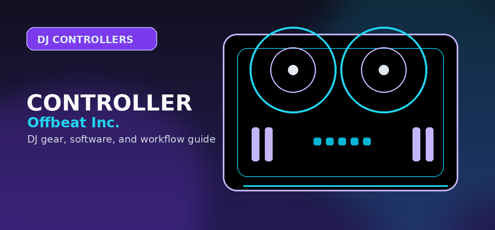

Best DJ Controllers Under $500 in 2026
DJ controllers under $500: check DDJ-FLX4 and Hercules Inpulse 500, and avoid mistaking FLX6-GT, MC7000 or RANE ONE for verified $500 deals.

Disclosure: This page uses affiliate links. We may earn a commission at no extra cost to you. Full disclosure →
Premium reference controllers compared; budget candidates and buying caveats below.
A $500 budget can buy a capable laptop-based DJ controller, but it does not guarantee motorized platters, XLR outputs or a transferable software license. Pioneer DDJ-FLX4 and Hercules DJControl Inpulse 500 are credible budget candidates. FLX6-GT, MC7000 and RANE ONE are reference comparisons, not three verified under-$500 offers.
This is a manufacturer-source comparison, not a hands-on test. Check the actual listing, condition, software access and return terms before buying.
Pioneer DDJ-FLX6-GT: Above-Budget 4-Channel Reference
The DDJ-FLX6-GT supports rekordbox and Serato DJ Pro with a four-channel layout, but its full-size jog wheels are not motorized. Pioneer DJ Store lists even a refurbished unit above $500. Consider it only if a genuine, condition-checked used offer meets your budget.
- 4-channel mixer with dedicated EQ and channel controls
- Full-size non-motorized jog wheels with track-position displays
- 8 backlit performance pads per deck for Hot Cues, Pad FX, Beat Jump and Sampler
- Performance effects including Merge FX and Jog Cutter
- Built-in USB audio interface for computer-based DJing
- Crossfader for channel transitions
- Software: rekordbox and Serato DJ Pro hardware compatibility while connected; no transferable Pro license
- Weight: 8.38 lbs (3.8 kg), per Pioneer DJ
Drawbacks: No motorized platters or standalone USB playback. The listed refurbished price exceeds $500; verify actual price, condition and warranty.
Search Pioneer DDJ-FLX6-GT controller on Amazon →Denon MC7000: Used-Market XLR Reference
The MC7000 has balanced XLR master and booth outputs, four channels and dual USB audio interfaces. It is not a verified new under-$500 offer. Check a specific used unit and computer compatibility. Serato DJ Pro is hardware-unlocked while connected, not supplied as a transferable license.
- 4-channel mixer with channel EQ and faders
- 6-inch touch-capacitive platters with tracking LEDs
- 8 performance pads per deck for Serato performance modes
- Balanced XLR master and booth outputs for PA connections
- Dual USB audio interfaces for computer handoffs
- Solid chassis — inspect condition when buying used
- Crossfader for channel transitions
- Serato DJ Pro hardware unlock while connected; no transferable license
- Weight: approximately 15.4 lbs (7 kg), per Denon DJ
Drawbacks: Check used condition, firmware, drivers, price and seller return policy. A sub-$500 listing is not guaranteed.
Search Denon MC7000 DJ controller on Amazon →RANE ONE: Premium Motorized Reference, Not Under $500
The RANE ONE has motorized 7.2-inch platters for turntable-style control. MAG FOUR names its crossfader, not its jog wheels. This is a substantially more expensive controller, not a $500-class recommendation. Serato DJ Pro is hardware-unlocked while connected.
- 2-channel mixer with performance-oriented layout
- Motorized 7.2-inch platters with adjustable torque; MAG FOUR is the crossfader
- 8 performance pads per deck for Serato performance modes
- MAG FOUR crossfader for scratching
- 24-bit USB audio interface built in
- XLR main and booth outputs for professional connections
- Serato DJ Pro hardware unlock while connected; DVS is a separate paid expansion
- Weight: approximately 23.55 lbs (10.68 kg), per RANE
Drawbacks: Above a $500 budget, heavy for transport and limited to two mixer channels. The existing link below searches for a Pioneer DDJ-FLX6-GT, not a RANE ONE; do not mistake it for a RANE purchase link.
Search Pioneer DDJ-FLX6-GT instead (not RANE ONE) →Above-Budget Reference Hardware Comparison
| Feature | Pioneer DDJ-FLX6-GT | Denon MC7000 | Rane One |
|---|---|---|---|
| Channels | 4 | 4 | 2 |
| Jog Wheel Type | Full-size non-motorized | 6-inch touch-capacitive | 7.2-inch motorized |
| Performance Pads | 8 per deck (RGB) | 8 per deck (RGB) | 8 per deck (RGB) |
| XLR Outputs | No | Yes (master + booth) | Yes (main + booth) |
| Software Access | rekordbox + Serato Pro hardware unlock | Serato Pro hardware unlock | Serato Pro hardware unlock |
| Multi-platform | Yes (Serato + RB) | Serato only | Serato only |
| Scratch Hardware | Jog Cutter effect | Touch-sensitive platters | Motorized platters + MAG FOUR crossfader |
| Budget status | Not verified under $500 | Check used listings | Above $500 |
| Weight | 8.38 lbs | 15.4 lbs | 23.55 lbs |
| Crossfader | Standard | Standard | MAG FOUR |
Quick Verdict
- Documented budget starting point: Pioneer DDJ-FLX4 — listed by Pioneer DJ at $329, with rekordbox and Serato DJ Lite compatibility.
- Beginner learning alternative: Hercules DJControl Inpulse 500 — Beatmatch Guide lights and DJUCED/Serato DJ Lite; check the current US price.
- Above-budget scratch reference: RANE ONE — real motorized platters and MAG FOUR crossfader, but not a $500 option.
The three-column table compares hardware capabilities; it does not establish three sub-$500 offers. Check an MC7000 only as a condition-verified used purchase, and do not assume FLX6-GT or RANE ONE fits the budget.
Bottom line: For a firm $500 ceiling, start with Pioneer DDJ-FLX4 or Hercules DJControl Inpulse 500 and verify current prices and software needs. Do not treat FLX6-GT, MC7000 or RANE ONE as confirmed budget deals. For premium scratch hardware, compare motorized controller options before spending more. Check current DDJ-FLX6-GT prices on Amazon →
Shop on Amazon
Browse DJ controllers under $500 — filter by price, verified ratings, and Prime eligibility.
Also Available on zZounds
Compare DJ controllers across retailers — interest-free payment plans available.
Reloop Beatmix 4: The 4-Channel Budget Powerhouse
The Reloop Beatmix 4 is an older four-channel model to investigate only if a suitable used unit is available. Verify the exact model, software support, condition and asking price instead of assuming a current new sub-$500 offer.
Hercules DJControl Inpulse 500: The Best for Beginners
The Hercules DJControl Inpulse 500 is a practical beginner candidate. Its Beatmatch Guide lights support manual beatmatching practice, and it works with DJUCED and Serato DJ Lite. Confirm the US asking price, software tier and output connections before buying.
Software Pairing for Best DJ Controllers Under $500 (2026)
Choosing the right controller is only half the battle; ensuring it plays nice with your preferred software is equally critical. In 2026, the landscape is dominated by three main players:
- Serato DJ Pro/Lite: The industry standard for hip-hop and open-format DJs. The RANE ONE unlocks Serato DJ Pro while connected; other controllers may require a separate Pro purchase or only support Serato DJ Lite.
- Rekordbox: The native ecosystem for Pioneer gear. If you plan on eventually playing in clubs using USB sticks, the DDJ-FLX4 is a more credible starting point within a $500 budget; verify your eventual player's USB export requirements.
- DJUCED/VirtualDJ: Often bundled with Hercules units, check the exact controller and software version for supported features and computer requirements.
Buying advice and compatibility checks
Use this section to sanity-check the DJ controller under $500 against your actual setup before comparing prices.
Best fit
DJs who want a serious beginner-to-intermediate controller with enough controls to avoid an immediate upgrade.
Skip if
Buyers who need standalone USB playback, pro booth outputs, or four-channel mixing right away.
Compatibility checks
Verify Serato/rekordbox/djay support, mobile support, and whether the controller unlocks the full app or only a limited version.
2026 update
The strongest under-$500 choices now depend more on ecosystem and software unlocks than raw knob count.
Price caveat
Prices fluctuate around bundles. Compare controller-only listings against bundles that include cases, headphones, or software licenses.
Recommendation logic
Choose the controller that matches the next year of practice and gigs, not the one with the flashiest spec sheet.
| Buying check | What to verify | Why it matters |
|---|---|---|
| Setup fit | Inputs, outputs, operating system, software tier, and accessories | Prevents buying gear that looks right but fails in the actual rig. |
| Upgrade path | Whether the product still makes sense after six to twelve months | Reduces duplicate purchases and rushed upgrades. |
| Total cost | Required cables, cases, subscriptions, replacement parts, and backups | The lowest listing price is often not the true working setup cost. |
Official spec and support links
Check current specs, supported software, firmware, and accessory requirements at the source before buying.
Frequently Asked Questions
What is the best DJ controller under $500 in 2026?
The Pioneer DDJ-FLX4 is a documented budget candidate: Pioneer DJ lists it at $329. Hercules DJControl Inpulse 500 is another model to price-check. FLX6-GT, MC7000 and RANE ONE are not three verified under-$500 deals.
Is the Denon MC7000 worth buying in 2026?
The MC7000 offers balanced XLR master and booth outputs and four-channel mixing. Check a specific used unit's condition, price, OS support and return policy. Serato DJ Pro is hardware-unlocked while connected, not a transferable license.
Why is RANE ONE not an under-$500 option?
The RANE ONE is above a $500 budget. It has motorized 7.2-inch platters and a MAG FOUR crossfader, not magnetic jog wheels. It unlocks Serato DJ Pro while connected; DVS is a separate paid expansion.
Do DJ controllers under $500 come with software?
Software access varies. DDJ-FLX4 supports rekordbox and Serato DJ Lite; Pro is separate. FLX6-GT, MC7000 and RANE ONE can unlock Serato DJ Pro when connected; this is not a transferable license.
Can I DJ professionally with a $500 controller?
A controller within $500 can support paid DJ work if it fits the venue, software and output needs. Verify connections, backup plans and the exact product's condition rather than assuming professional features at every price.